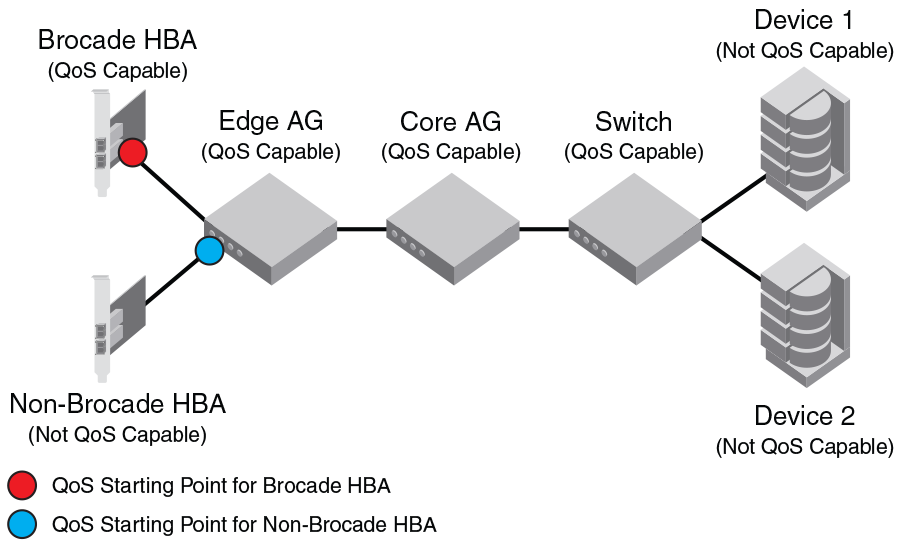

QoS: SID/DID traffic prioritization
SID/DID traffic prioritization allows you to categorize the traffic flow between a given host and target as having a high or low priority; the default is medium. For example, you can assign online transaction processing (OLTP) to a high priority and the backup traffic to a low priority.
For detailed information on this feature, refer to "QoS: SID/DID traffic prioritization" in the Fabric OS Administrator’s Guide.
The following figure shows the starting point for QoS in various Brocade and non-Brocade configurations.

Figure 13. Starting point for QoS